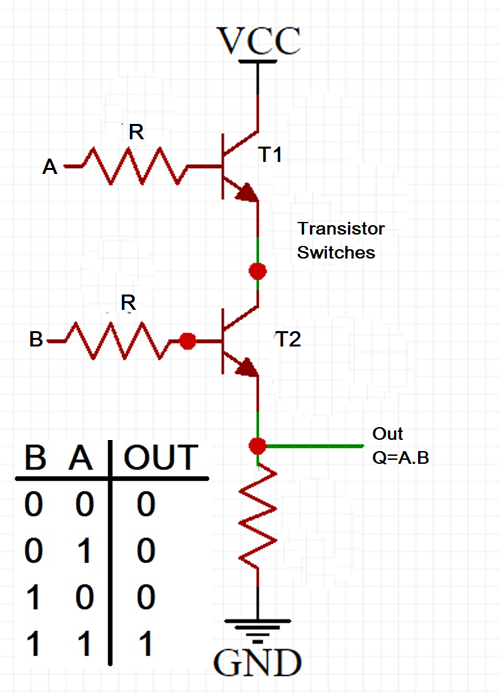
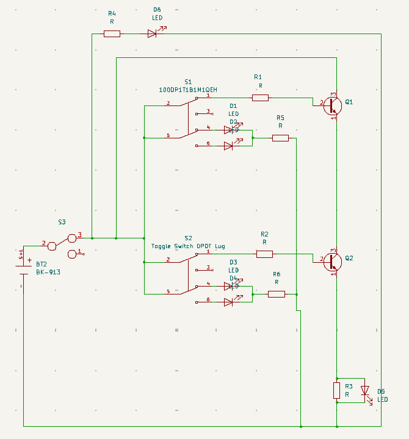
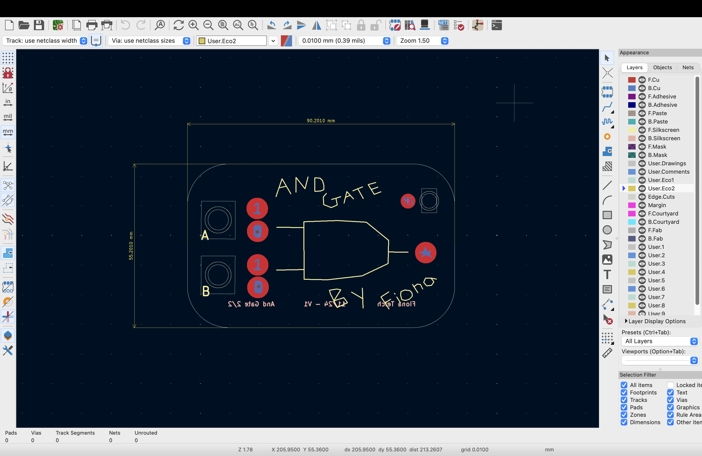
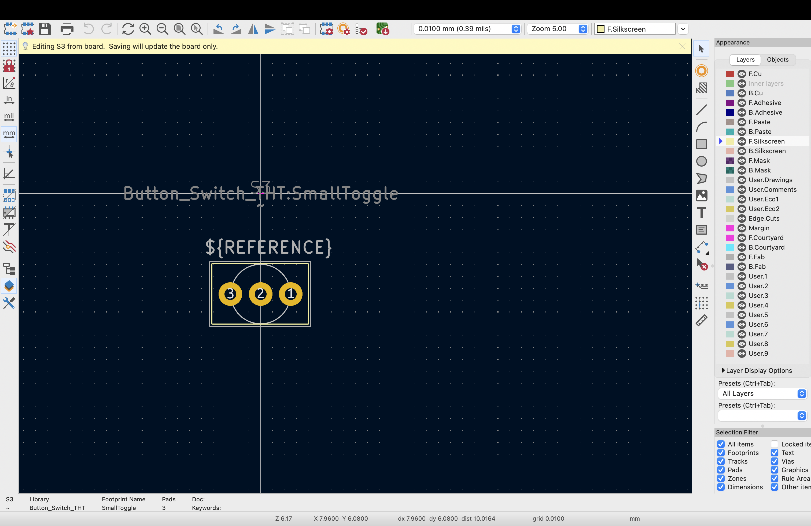
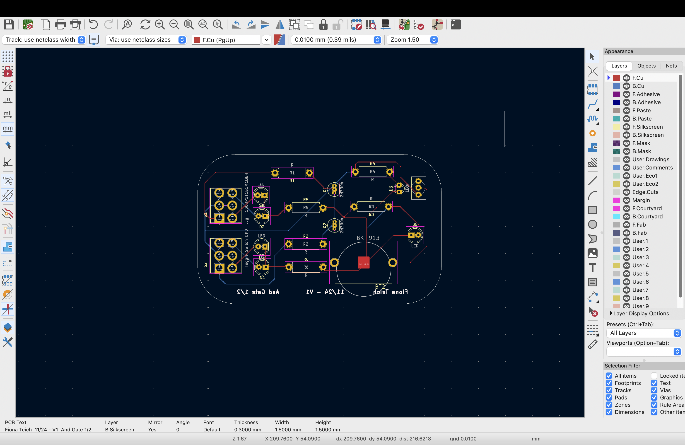
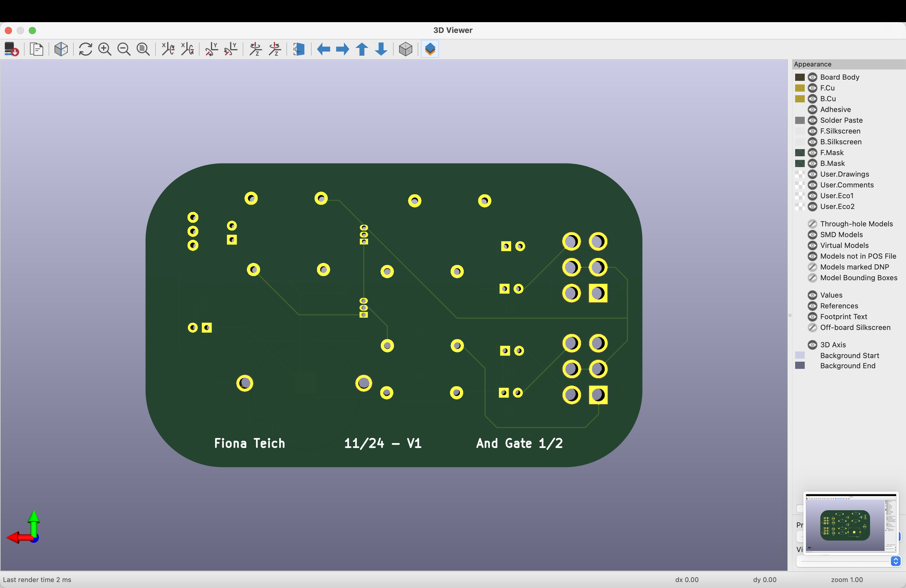
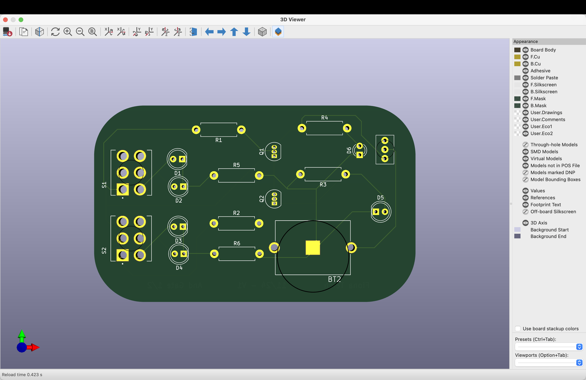
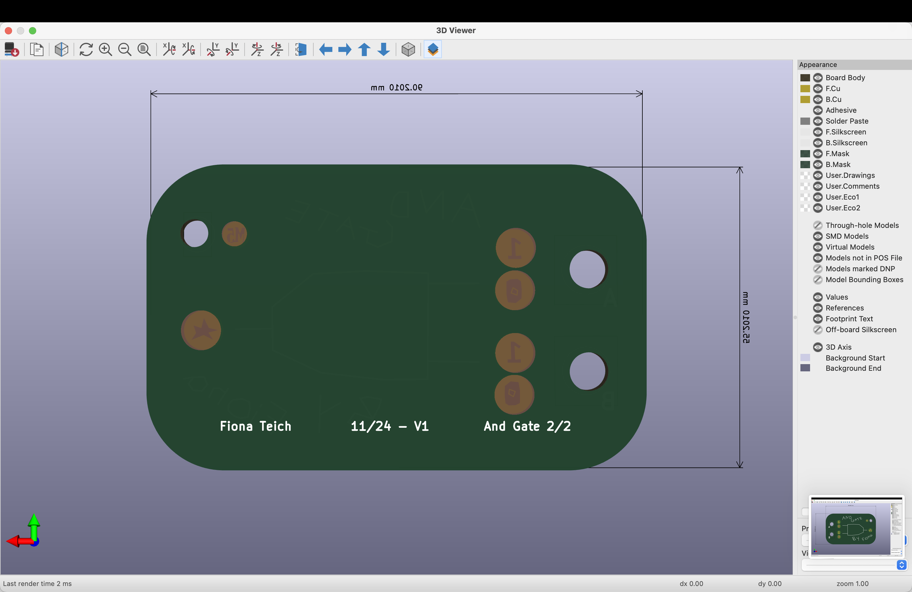

This project is an AND Gate made to fit into an altoids tin, This project is meant to continue my "Odd Harmonics" journay of creating DIY kits that teach electrical enginering concepts in a fun and engaging way. In this project I wanted to play around with PCB layers, LEDs and multi boards. This was inspired by my internship at Synth Cube in Waltham, where I soldered tested and calibrated DIY synthizier and guitar pedals. At this internship I also got expeirence looking at how people are able to use PCBs in creative ways. This is also my first project making a footprint.


I took this schematic of off google (Click Here) and then modified it and bread-boarded it to be able to integrate LEDS. I didnt think too much about the circuit itsself as this was more of an exercise in PCB layers and presentation
 The goal was to have leds to indicate high and low input bits for the two inputs and one output, high = LED on, Low = LED off. I also added an led for a power indicater.

I did this buy first adding a DPDT (double pole double throw) switch on both A and B where when swtiched "high", two tracks are on, the transitor and resister track and an added LED "high" track. Then when switched "low" then theres two tracks but only one is important and wired, the LED indecating a low bit.

Here is the breadboard/schematic layout for the top layer PCB in KICAD, For the top board I drew the AND gate and words within KICAD and also designed the 1s and 0s. I was able to achieve the LED light shining through by creating a circle on the back mask and creating the shape (1, 0 or star) in the front mask layer. I then added a circle of front copper layer to keep the light from shinning through the board. There is still a halo that can be seen in some lighting so something I would do next time would be to do a full copper plane on the front.
 While laying out the PCB I find my footprints through the M5 portal, where I locate my parts. The small switch (Click Here) does not have any footprint associated with it so I measured the component and created a footprint which worked very well. I also added a ring noting the diameter of the shaft on all the switch footprints to help with lining up the two pcbs
  Here are the top and bottom board in board view
Next steps for new PCB